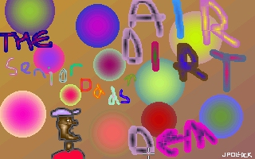

Here's a review of our Air-Dirt Demo which appeared in issue 22 of the established disk-magazine Maggie. Mega respect to Mr Pink of Reservoir Gods and Tat of Digital Chaos for their rave review, which you can read here, along with the odd interjection by us!
In the beginning there was "Anal Tuck". And "Anal Tuck" was good. But the people were thirsty for more, and lo the dads did present "The Water Demo". And the people saw that the water demo was good and there was much rejoicing. And on the third day the dads returned with..."The Air Dirt Demo".
The Senior Dads posse has increased significantly since the early days of Nonce & Jessie. It has been rumoured that Doddering Git has been headhunted to Sony to write the operating system for the Playstation, whilst Bill Gates seems desperate to get his hands on Old Fart. Not to offer him a job, he just enjoys feeling up pensioners. [Er, actually I think Bill Gates is a good role model for us coders, so I feel that comment was quite unwarranted! -Old Fart]
On loading this demo a great rendered ascii logo of the dads scrolls by and you are presented with the immortal words
W3Lc0Me3 2 dA
A 1 R D I R T D 3 M 0
A shiver of excitement runs down your spine.
The Dads give you the choice of toggling the speaker on or off. Thoughtful, as well as talented.
Some mesmeric flashing logos introduce the demo, and there is a great Atari Faclon 030 logo with some cunning eyes staring from the zeros. They are saying "keep your eyes on this demo as it is going to be worth watching".
The screen shimmers with a brilliant "Air Dirt" logo painted by Jackson Pollock. The choice of colours is breathtaking.
We are now led through a "credits gallery", where each member of the senior dads is presented with a portrait skilfully painted by Jackson Pollock. First is main coder "Old Fart" looking his usual cheerful self. Next up is coder "Doddering Git" looking rather grumpy, though he would no doubt prefer the term contemplative. Musician "Dame Vera Lynn" stands proudly blowing an enormous trumpet! Jackson Pollock chooses to draw himself as an abstract scribble, which I see as a comment of the futility of the computer screen as a representative art interface.
Other demos have given you starfields with 1,000 2,000 8,000 or even 10,000 dots. But never before have Falcon owners been treated to 64,000 dots each whizzing past your head at the speed of light. The effect is encapsulating - like sharing a tumble dryer with Harry Secombe and Suzanne Charlton.
"Shade Bobs" announces the text. If this was another demo crew you would groan, but you know that the Senior Dads will take even commonplace effects into unknown territory. The Dads cunningly switch conventional "bobs" for representations of "dads" and thus Shade-Dads are born. The music rises in tempo as a glorious spectrum of shade dads fills the screen. [No the tempo hasn't actually changed. The rhythm just becomes more syncopanted, as you would know if you've ever studied music -Dame VL]
Another splendid senior dads picture appears, this time featuring Doddering Git in medieval attire proclaiming that the senior dads are the dads who like to say "NI!". The attention to detail on this picture are startling - the clothing, the font, the wording all totally free of anachronism. You are almost transported back to England in the middle ages, and the words of Chaucer are started to ring around your ears when you are abruptly whisked into the next effect.
"Filled Vector Tunnel". The dads are not one for wimpy dot tunnels. Why use one pixel when 4,870 will suffice? [Er, I don't know, I didn't counted the exact number yet! -Old Fart] The effect of flying down the tunnel was so realistic that I actually fell off my seat! The Dads coding is so hardcore that even the Videl chip can't keep up! They push it so far to the limits that it starts steaming the tunnel starts warping in itself. It is almost like they have created a wormhole through space and time.
Even the best demos need design, and the Dads don't let us down. Whilst some lesser crews may just stick a mushroom in the corner, the dads do a lot better with a full screen apple (scientifically proved as the fruit containing the most design). Also included on the screen are the words "NOT HAPPY" - yes Pollock has also managed to pen a stinging comment of the state of today's youth. Design and politics in one screen. Astonishing. [I'm glad you noticed the apple, but I'm surprised you didn't notice it's an unhappy face as well! -JockPol]
Pollock now shows us the depth of his talent with a sumptuous raytraced picture. Hovering over a sparkling chessboard are three superbly rendered objects. They even have shadows and lens flair! You thought this was only possible on silicon graphics machines, now it has been done on the Falcon.
The standard texture mapped cube has become a rather cliched affair. A spinning box featuring some true colour graphics? Boring! The Senior Dads have read the change in climate and present the texture mapped cube in a new format. First they use just one colour making it appear subtle, understated yet elegant. And second they don't rotate the cube. When you rotate texture mapped cubes it becomes hard to see that graphics, and all that spinning can make you feel dizzy (especially if you are an octogenarian with a heart condition).
The Dads' cube features a Fuji, A senior dads logo and the grinning face of "old fart". There is also another first in this demo, texture mapping with a scroll text! The scroller is also synced to the 3D so when the cube stops the scroller speeds up. The cube is even perspective correct. Coding genius.
"Fire! Fire! Fire!", no don't worry Maggie HQ is not burning down, I am just making a comment on the next effect. Whilst traditional fire usually appears as boring flames, the Dads have turned fire quite literally on its head. There is a fire scroller which burns with a passion as above it fire-dads are ablaze in empathy. This is so realistic that I had actually called 999, but fortunately the next effect appeared before I gave my address.
So far the dads have managed to push the Falcon beyond its known limits without using the DSP. [n0!! w3 y00Z3d tHa dSp 1n c0Lon1C 1rR1gAt10N!!!11 @*d0D g1T*@] Now they decide to push their ancient talents onto the 56001.
The start of the "DSP Section" is accompanied with an ABBA sample. They can't use the DSP for the tracker music as it is full of their 3D code. And what is this 3D code doing? Why, simply creating the most fantastic game the Falcon has ever seen.
Entitled "Poom" we are given a jaw dropping preview in this demo. Poom, as you may have guessed, is a Doom clone. But it beats such efforts as "Bad Mood" by having gouraud-phong shaded texture mapping. But the real twist is that this is a stereogram game. You must remember those pictures so popular two years ago which seemed to be a random collection of dots, but when you screwed up your eyes for two hours and took lots of drugs they still looked like a random collection of dots. [Well, don't take drugs then- it's not big and it's not clever, as Noel out of Oasis says! -Old Fart] Well here it is on the Falcon. We knew the DSP was powerful, but we didn't know it was this powerful.
The dads are convinced that Poom will be a Format Gold, sadly the demise of the publication will rob them of this deserved award. But "Format" will certainly be on the lips of everyone when they receive a disk with the final version of this game on it. [Look, we didn't know Format was about to wimp out, but that's not excuse to get all incomprehensible on us! Stop snivelling and get your shit together! -Dame VL]
Another great Jackson Pollock logo appears, this time it is a Senior Dads one and is officially copyrighted so unfortunately we can't use it in Maggie without months of potentially bankrupting legal action.
Like Damien Hirst and Irving Welsh before them, the Dads are now the toast of the young trendy pop set. Pop down any Camden watering hole and you will hear media celebrities discussing the relative merits of Doddering Git and Old Fart. It is only a matter of weeks before Dame Vera Lynn will make the cover of the NME. So it comes as no surprise that Damon Albarn (from popular beat combo"Blur") has agreed to appear in the demo.
Damon appears in a wildly exciting motion blur effect, but still manages to sing "parklife" as he blurrs across the screen. Rumour has it that Shed 7 drummer Alan Leach is to feature in the Z-Buffer section of the next EXA demo.
"The Tit Girl!". Damon isn't the only celebrity to appear in the demo. Louise Wener from sleeper blagged her way onto air dirt. I would tell my scurrilous story about an Ice Cube and a certain part of Miss Wener's anatomy, but unfortunately the libel laws are against us. Louise persuaded Jackson Pollock to paint her in a state of undress, this is the type of biting anti-pc statement that she has built her career on. And as Doddering Git says, she is a bit of a babe! Nice pants, too. [Er, actually, I got her likeness out of an old copy of Melody Maker, so she didn't need to pose for me! -JackPoll]
Another Jackson Pollock picture, this time featuring the great man himself looking rather stern. This is to introduce his impending MPEG style video compression system which features on the end credits.
If the rest of the demo had been both inspired and inspirational, it is the finale which is the coupe de grace, the icing on the cake, the casing on the Falcon. The music changes into some serious Sex Pistols riffs. A big Jonny Roten stands on the right of the screen and then he begins singing, swinging his microphone to and fro. Just when you thought it couldn't get any better Steve Matlock appears to dribble some axe mayhem of the proceedings. Besides these characters is an end scroller which provides a stunning insight into the creation of the demo.
The dads have pushed the Falcon so far that at the end the entire memory is full and there is no more room for the end section. The Falcon reaches its very limits and crashes - this is a real rock and roll exit, equivalent to the guitarist smashing his guitar at the end of the gig.
At the finish all that is left is the knowledge that you have just seen the best ever Falcon demo, and the sound of a reverberating keyclick.
[ In Awe = Mr. Pink ]
| TECH VIEW: | The Senior Dads do it again. The only criticism is that the clipping on the "doom" clone is not quite correct.[s0Rr33 tAt!!!11 w3 w3R3 1n a m3Ga rU2h 2 f1N12h dA d3M0!!!11 @*d0D g1T*@] Get it sorted lads! Staggering. [tat] |
Other quotes from Maggie #22 about the Senior Dads:
Demo of the year..
A lesser field to work from this year.. Still several releases, but nothing (yet) to rival what was released in 1995.. [...] (After having said that, I've just seen the seminal Senior Dads work, the fantastic 'Air Dirt' demo which stands head and shoulders over everything else produced this year.. Clearly the work of a genius, if a very old genius receiving aftercare for a stroke related condition!)
P.P.S S3n10r DadZ Rul3c!11!1...
Maggie's reply: Yes indeed, the Seeenyor Dadz do indeed rule!!